Application of rotations to the dynamics of rods can be traced to the works of Serret [1] and Frenet [2] on space curves in the early 1850s and Kirchhoff’s work [3] on rod theory in the late 1850s. These works feature triads of vectors that rigidly rotate as one moves along a curve in space, and the resulting rate of rotation serves to specify curvatures, torsions, and strains. To explore these topics, we begin with a discussion of space curves and present the Serret-Frenet relations and the Darboux vector; these ideas are applied to a variety of curves for illustration. We then introduce the concept of a material curve and follow with a discussion of Kirchhoff’s celebrated rod theory.
[toc]
Space curves
The geometric features of space curves, or curves that are embedded in three-dimensional space, are a classic topic in differential geometry. The notion of curvature of a plane curve was extended to a space curve by Serret in 1851 and by Frenet in 1852 (see [1, 2, 4]). Their work forms the basis for most treatments of space curves in modern texts on differential geometry (e.g., [5, 6, 7]). The primary resource for the content we present here is the remarkable text by Kreyszig [5]; our discussion of the forthcoming examples of space curves is adapted from the textbook [8].
The Frenet triad, curvature, and torsion
Consider a space curve in Euclidean three-dimensional space , as illustrated in Figure 1. We assume the curve is parameterized by an arc-length parameter such that any point along the curve can be located relative to a fixed origin using a set of Cartesian coordinates
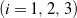
with corresponding orthonormal, right-handed basis by specifying the value of at the point of interest.
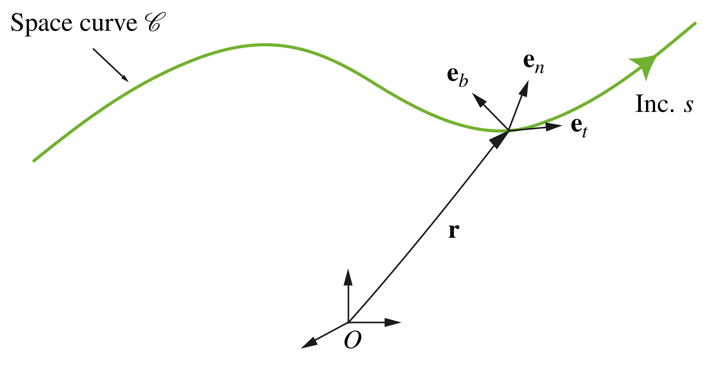
Therefore, we can express the position vector of any point on the curve as follows:
(1) 
The unit vector that is tangent to the curve is given by
(2) 
and the derivative of this vector defines the curvature and the unit normal vector :
(3) 
That is,
(4) 
We then use the unit tangent and normal vectors to construct an orthonormal and right-handed triad known as the Frenet triad:
(5) 
where is referred to as the unit binormal vector. For a curve whose point locations also vary with time , i.e., when , we can still calculate the Frenet triad, but we must do so at each instant in time. Using the fact that the Frenet triad is orthonormal, we can define the geometric torsion of the space curve, , by the relation
(6) 
In this definition, the minus sign is a convention. A space curve is said to be right-handed if and left-handed if (see [5]). Notice that it is possible to define the curvature and geometric torsion without referring explicitly to the Frenet triad:
(7) ![\begin{eqnarray*} && \kappa = \left|\!\left| \frac{\partial^2 {\bf r}}{\partial s^2}\right|\!\right|, \\ \\ \\ && \tau = \left[ \frac{\partial {\bf r}}{\partial s}, \, \, \frac{\partial^2 {\bf r}}{\partial s^2}, \, \, \frac{\partial^3 {\bf r}}{\partial s^3} \right], \end{eqnarray*}](../wp-content/ql-cache/quicklatex.com-21dc0a0c3a62499a84f7e889644d77b3_l3.png "Rendered by QuickLaTeX.com")
where
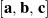
denotes the scalar triple product. Finally, we mention that there are several methods of defining the twist of a space curve. The most popular approach is to use the geometric torsion obtained from the Frenet triad to define the total torsion of a space curve, : (8) 
for a curve segment of length . Note the conventional division by
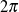
in this definition.The Serret-Frenet relations
The Serret-Frenet relations are compact expressions of the rate of change of the Frenet triad basis vectors expressed in the basis
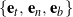
. These relations are obtained by using the definitions (3) and (6) and by differentiating : (9) 
We can write these relations using the compact notation
(10) 
where  and
and
(11) 
Noting that the Frenet triad is a right-handed basis, the compact form (10) is a statement of the fact that, locally, the triad can be viewed as rigidly rotating along the curve. That is,
(12) 
where is a rotation tensor whose axial vector
(13) 
The vector , which has the equivalent representations (11) and (13), is often called the Darboux vector. Provided
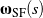
and the initial conditions , , and for the Frenet triad, we can integrate (9) to determine the evolution of the triad as it moves along the curve. Using the result for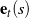
and integrating (2) with initial condition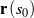
then yields the profile of the space curve,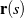
. Lastly, we note that at points on the curve where the curvature vanishes, the unit normal vector and the unit binormal vector typically rotate through 180 about the unit tangent vector . At such points, the rotation tensor is not differentiable as a function of and as given by (11) cannot be obtained from (13).A plane curve
To illustrate the previous developments related to the Frenet triad, we take as an example a curve in the vertical plane, like the one shown in Figure 2.

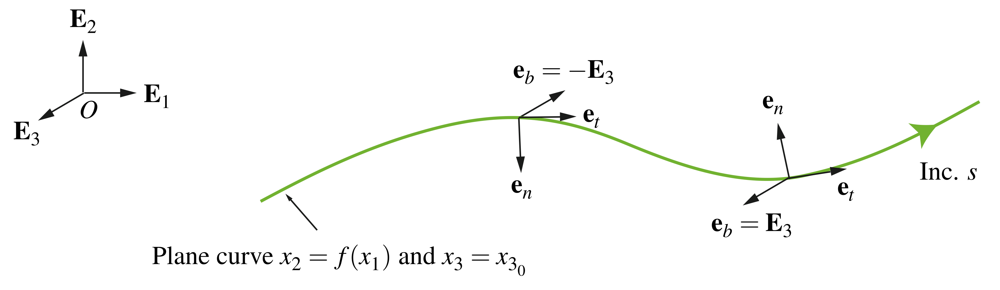
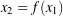
.For this plane curve, we can take the position vector of a point on the curve, parameterized by the arc-length parameter , as
(14) 
From (2), the corresponding unit tangent vector is then
(15) 
Suppose we define an angle
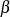
such that (16) 
which allow us to establish two orthogonal unit vectors:
(17) 
We can use these vectors and to express and its derivative in convenient forms:
(18) ![\begin{eqnarray*} && {\bf e}_t = {\bf e}_1, \\ \\[0.10in] && \frac{\partial {\bf e}_t}{\partial s} = \frac{\partial \beta}{\partial s} {\bf e}_2. \end{eqnarray*}](../wp-content/ql-cache/quicklatex.com-ce0bd163ce969c8ee7c693410f03ce3b_l3.png "Rendered by QuickLaTeX.com")
Therefore, from (4), the plane curve’s curvature and the unit normal vector have the representations
(19) 
where changes in the sign of
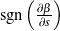
can be interpreted as rotations about through 180. Taking the cross product of with yields the unit binormal vector (20) 
Thus, from (6), the geometric torsion for a plane curve is zero. Consequently, (8) reveals that the total torsion is also zero. With some further calculations, we find that the Darboux vector for the plane curve is
(21) 
It is straightforward to generate a representation for the corresponding rotation tensor
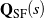
where neither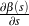
nor its initial value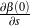
are zero: (22) 
It is illuminating to consider a few interesting cases of plane curves. For example, for the sinusoidal plane curve
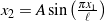
, the curvature at the points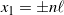
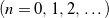
, and thus is not defined at these points. Also, a plane curve with constant non-zero curvature and geometric torsion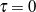
is the arc of a circle. Because this curve is indicative of a constant bending moment, circular arcs feature prominently in design.A circular helix
We now consider another example of a space curve: a circular helix, such as the ones depicted in Figure 3. A circular helix with radius can be defined by the position vector
(23) 
where is a cylindrical polar coordinate such that the unit vectors
(24) 
It is common to describe a helix in terms of the pitch parameter
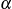
, which is related to the helical curve’s pitch angle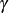
:(25)
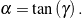
If
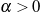
, or equivalently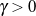
, then the helix is said to be right-handed, whereas the helix is left-handed if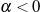
, or equivalently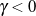
.
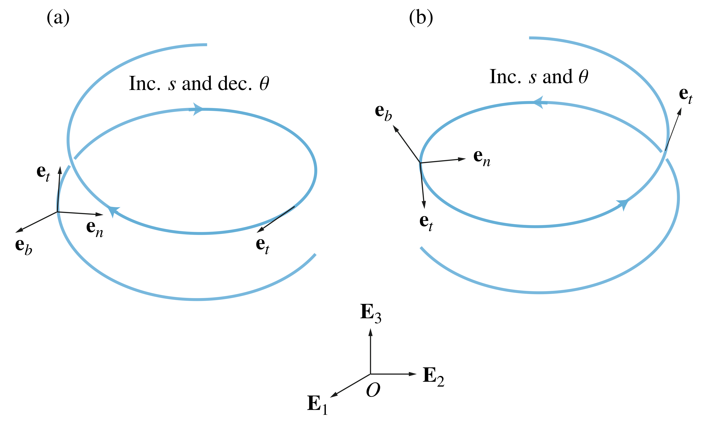
We can determine the Frenet triad for the helix by first differentiating the position vector with respect to the arc-length parameter and using the chain rule to compute the unit tangent vector :
(26) 
Because is a unit vector, we infer that  . When
. When
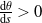
, we find that the Frenet triad basis vectors have the representations (27) ![\begin{eqnarray*} && {\bf e}_t = \frac{1}{\sqrt{1 + \alpha^2}} \left( {\bf e}_\theta + \alpha {\bf E}_3\right), \\ \\[0.10in] && {\bf e}_n = - {\bf e}_r, \\ \\[0.10in] && {\bf e}_b = \frac{1}{\sqrt{1 + \alpha^2}} \left({\bf E}_3 - \alpha {\bf e}_\theta\right). \end{eqnarray*}](../wp-content/ql-cache/quicklatex.com-d4b2ad5eb8c3a49f59fe45f31cfe5171_l3.png "Rendered by QuickLaTeX.com")
Alternatively, when
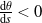
, (28) ![\begin{eqnarray*} && {\bf e}_t = \frac{- 1}{\sqrt{1 + \alpha^2}} \left( {\bf e}_\theta + \alpha {\bf E}_3\right), \\ \\[0.10in] && {\bf e}_n = - {\bf e}_r, \\ \\[0.10in] && {\bf e}_b = \frac{- 1}{\sqrt{1 + \alpha^2}} \left( {\bf E}_3 - \alpha {\bf e}_\theta\right). \end{eqnarray*}](../wp-content/ql-cache/quicklatex.com-0bbb3a588d1928c6217b8ca94b8508a6_l3.png "Rendered by QuickLaTeX.com")
In terms of the pitch angle , the relations (27) and (28) simplify to the single prescription
(29) 
Some straightforward calculations of the derivatives of the Frenet triad basis vectors and the use of the chain rule reveal that the curvature
(30) 
and the geometric torsion
(31) 
both of which are constant. A helix is the only curve with constant curvature and constant non-zero torsion. For one segment of the helix of length
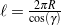
, the total torsion (32) 
The Darboux vector for the helix has the interesting representations
(33) 
With the help of (29), the rotation tensor associated with the Frenet triad for a circular helix can be decomposed into the product of a pair of rotations:
(34) 
where the function
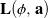
denotes a rotation through a counterclockwise angle about an axis . Finally, we note that a circle of radius can be obtained from the helix by setting in the previous developments. In this case, the curvature , and the geometric torsion and total torsion are both zero: . Additionally, from (27) and (28), the Frenet triad reduces to the basis vectors for cylindrical polar coordinates, as illustrated in Figure 4: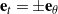
, , and .
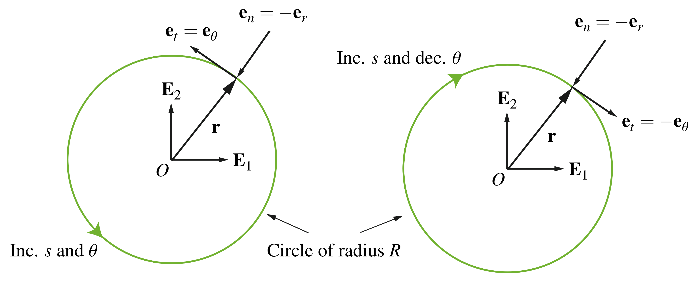
Material curves
In our upcoming discussion of the kinematics of rods, we model the centerline of a rod as a one-dimensional continuum of material points. This continuum is known as a material curve. Based on the works of Green, Naghdi, Wenner, and Laws [9, 10, 11, 12], the concept of a material curve embedded in three-dimensional Euclidean space is described in the following manner. Referring to Figure 5, the current configuration of the material curve, , is defined by the vector-valued function . Here, is a convected coordinate along the material curve that uniquely identifies material points of ; that is, even as the material curve moves in space, the coordinate associated with a material point remains the same. The vector is the position vector of a material point of with respect to a fixed origin. A fixed reference configuration of the material curve,
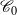
, is defined by the vector field . For convenience, we assume that is the arc-length parameter of the material curve’s fixed reference configuration.
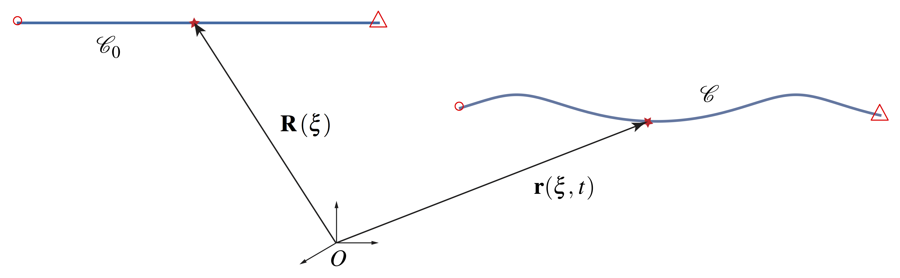
Kirchhoff’s rod theory
To develop a basic model of a rod, its centerline, represented by a material curve, must be capable of resisting bending and torsion. To incorporate these characteristics, additional structure on the concept of a material curve is needed. The added structure we use is a deformable set of vectors associated with each material point of the centerline. These vectors are known as directors, and a material curve with directors is referred to as a directed curve. The terminology “director” was introduced in a seminal paper [13] by Ericksen and Truesdell in 1958. One of the main contributions of Truesdell and Ericksen’s work was a critical examination of the Cosserat brothers’ work on deformable media [14, 15]. The paper [13] helped inspire a renaissance in works on rod and shell theories that continues to this day [9, 16, 17]. From a historical perspective, Kirchhoff (1824-1887) first presented a rod theory capable of modeling bending and torsion in 1859 [3]. Although his treatment differs considerably from the modern treatments that we follow here, the rod theory we present is known as Kirchhoff rod theory in recognition of his contribution. In the early years of the 20th century, the Cosserat brothers presented a formulation of Kirchhoff’s rod theory in [14, 15] using what we now call directors, and so the rod theory we discuss is often considered an example of a Cosserat rod theory.
The directed curve
A directed curve is a material curve for which a set of directors is defined at each material point. The directors represent kinematical quantities pertaining to the cross-sections of a rod-like body, and thus a directed curve serves as a model for such a body. Following the seminal work of the Cosserat brothers in the early 1900s, a directed curve is often known as a Cosserat curve. Referring to Figure 6, a directed curve in its current configuration is defined by the position vector
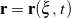
locating a material point on the curve relative to a fixed origin by the convected coordinate , and by the two directors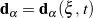
. A fixed reference configuration of the directed curve is defined by the position vector = and by the referential directors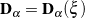
, where is assumed to be the arc-length parameter of the curve in its reference configuration. In many treatments of rods, it is common to denote by . This is especially the case with the works of Green, Naghdi, Wenner, and Rubin [10, 11, 18]. Similarly, is denoted by . Alternatively, following Antman [16], one may define and . For Kirchhoff’s rod theory, these two prescriptions are equivalent.
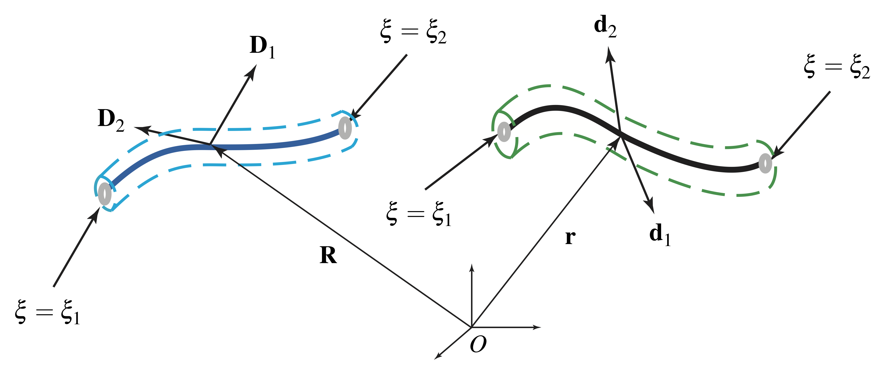
Kinematics
In Kirchhoff’s rod theory, the directed curve representing a rod-like body’s centerline is assumed to be inextensible, which implies
(35) 
Furthermore, we assume the body’s cross-sections remain plane and retain their orientation relative to the centerline. To render this assumption into a mathematically tractable form, we let , , and
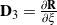
define a right-handed and orthonormal triad at each material point in the reference configuration. If we also denote a fixed right-handed basis for by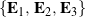
, then we can define a rotation tensor that relates the bases and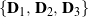
. That is, (36) 
For many reference configurations, we can conveniently choose such that ; some exceptions are for what Love [19] refers to as initially curved rods. Under a motion of the directed curve, the vectors retain their relative orientation and magnitude. Consequently,
(37)
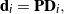
where is a rotation tensor. The most popular method to parameterize is to use the Euler angles. For example, Love [19] used a set of 3-2-3 Euler angles to parameterize . Recently, Maddocks and some of his co-workers used unit quaternions (or the Euler-Rodrigues symmetric parameters) to parameterize this rotation [20, 21]. Regardless of how is parameterized, notice that
(38) ![\begin{eqnarray*} && {\bf d}_\alpha = {\bf P}{\bf P}_0 {\bf E}_\alpha, \\ \\[0.10in] && \frac{\partial {\bf r}}{\partial \xi} = {\bf P}\frac{\partial {\bf R}}{\partial \xi}. \end{eqnarray*}](../wp-content/ql-cache/quicklatex.com-6a8340c5b3fa1f14acb7c4633f3c782c_l3.png "Rendered by QuickLaTeX.com")
These two equations define the so-called Kirchhoff’s constraints on the rod. Utilizing the identity ![\bepsilon \left[{\bf Q}{\bf B}{\bf Q}^T\right] = \mbox{det}\left({\bf Q}\right) {\bf Q}\left( \bepsilon \left[{\bf B}\right]\right)](../wp-content/ql-cache/quicklatex.com-aff970191f44e428ff2b43ad6875cc5c_l3.png "Rendered by QuickLaTeX.com") for any orthogonal tensor and any skew-symmetric tensor , the constraints (38) imply that
for any orthogonal tensor and any skew-symmetric tensor , the constraints (38) imply that
(39) 
where and are axial vectors of skew-symmetric tensors and
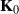
, respectively: (40) 
Strains
The components of the vector with respect to the basis in the reference configuration define three strain measures:
(41) 
The strains
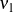
and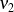
, commonly referred to as curvatures, correspond to bending resistance of the centerline in two directions, while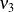
is known as the torsion. This torsion should not be confused with the geometric torsion defined earlier. Alternative strain measures are given by the components of the vector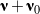
with respect to : (42) 
where are termed intrinsic strains. The strains given by (42) could be considered those relative to a reference configuration in which the rod’s centerline is straight and the directors are constant. Examples of using as a strain measure can be found in applications such as modeling of double-stranded DNA (e.g., see [22, 23, 24]). The effects of the bending and torsional strains on a rod are illustrated in Figure 7. For the reference configuration shown in this figure, the intrinsic strains
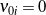
.
Helical plies
As an illustrative example, we consider the helically plied structures shown in Figure 8. Suppose we wish to model the helical plies and the cylindrical structure about which they are wrapped using a rod theory. We are then faced with the issue of a choice of reference configuration for such a structure and, with that, a choice of the referential directors and . Here, we consider one possible choice where these directors “follow” the helical strand. We emphasize that for all three structures shown in Figure 8 is the position vector of material points located on the centerline of the cylindrical body.

We start by choosing a fixed unit vector that is parallel to the longitudinal axis of the cylindrical body in its reference configuration such that the position vector
(43) 
Next, we denote the constant radius and pitch angle of the helical strand by and , respectively. The equation of the helical strand’s centerline may be parameterized using a cylindrical polar angle :
(44) 
If we choose the material coordinate to be the arc-length parameter for the reference configuration such that when , then the two coordinates are related by
(45) 
and so the referential directors have the prescription
(46) 
Consequently, we can express the representation (44) for in the compact form
(47) 
From (46), it is straightforward to see that the rotation tensor corresponds to a rotation about through an angle . As a result, the axial vector of the skew-symmetric tensor is given by
(48) 
Thus, the reference configuration of the cylindrical body has a constant pretwist . This pretwist is often known as the intrinsic twist and can be compared to the geometric torsion of a helical space curve and the total torsion of a turn of this helix that we discussed earlier.
Twist, torsion, and tortuosity
The material curve associated with a directed curve can, at each instant, be associated with a space curve. It is natural to question how the strain measure and the rotation tensor for the directed curve are related to the Darboux vector and its corresponding rotation tensor for the space curve. We turn to discussing these matters. Referring to Figure 9, recall that the orthonormal and right-handed Frenet triad associated with the space curve satisfies the Serret-Frenet relations (9), yielding the Darboux vector in terms of the space curve’s geometric torsion and curvature .

Now, the directors associated with the directed curve remain mutually perpendicular to the centerline, establishing an orthonormal, right-handed triad for the curve. Consequently, the unit normal vector and the unit binormal vector of the Frenet triad are coplanar with the directors and . We can therefore surmise that the two triads are related by a rotation about :
(49) 
The corresponding rotation tensor has various representations:
(50) ![\begin{eqnarray*} {\bf Q}_t \!\!\!\!\! &=& \!\!\!\!\! {\bf d}_1\otimes{\bf e}_n + {\bf d}_2\otimes{\bf e}_b + {\bf d}_3\otimes{\bf e}_t \\[0.075in] &=& \!\!\!\!\! \cos(\phi)\left({\bf d}_1\otimes{\bf d}_1 + {\bf d}_2\otimes{\bf d}_2\right) + \sin(\phi)\left({\bf d}_2\otimes{\bf d}_1 - {\bf d}_1\otimes{\bf d}_2\right) + {\bf d}_3\otimes{\bf e}_t \hspace{1in} \scalebox{0.001}{\textrm{\textcolor{white}{.}}} \\[0.075in] &=& \!\!\!\!\! \cos(\phi)\left({\bf e}_n\otimes{\bf e}_n + {\bf e}_b\otimes{\bf e}_b\right) + \sin(\phi)\left({\bf e}_b\otimes{\bf e}_b - {\bf e}_n\otimes{\bf e}_b\right) + {\bf d}_3\otimes{\bf e}_t, \end{eqnarray*}](../wp-content/ql-cache/quicklatex.com-82b1813771fdebac182f9baacea86f3c_l3.png "Rendered by QuickLaTeX.com")
where is a counterclockwise angle of rotation. Several results now follow immediately. First, the rotation tensor
(51) 
where
(52) 
Here, denotes a fixed orthonormal, right-handed basis. Second,
(53) 
and therefore the strain measures and for the directed curve are related to the geometric torsion and curvature of the space curve by
(54) ![\begin{eqnarray*} && \nu_3 + \nu_{03} = \tau + \frac{\partial \phi}{\partial s}, \\ \\[0.10in] && \nu_1 + \nu_{01} = \kappa \sin(\phi), \\ \\ && \nu_2 + \nu_{02} = \kappa \cos(\phi). \end{eqnarray*}](../wp-content/ql-cache/quicklatex.com-84e15823e923522fedb7cc2b6a472bab_l3.png "Rendered by QuickLaTeX.com")
In the context of the differential geometry of curves on surfaces, the relations (54) are known as Bonnet’s theorem and Meusnier’s theorem (see Kreyszig [5] and, for additional references, [25]). For Kirchhoff’s rod theory, these relations were first written down by Love in 1892 (see Section 253 of [19]). It is a common error to assume that . We follow Love and call the angle of twist. To interpret in this manner, imagine a straight rod and twist it between its ends. Possibly to avoid confusion with the geometric torsion , Love defines the tortuosity and uses exclusively. We refer the interested reader to the wonderful paper [26] by Antman and Alexander for further discussion on this topic.
References
- Serret, J.-A., Sur quelques formules relatives à la théorie des courbes à double courbure, Journal de Mathématiques Pures et Appliquées 16 193-207 (1851).
- Frenet, J.-F., Sur quelques propriétés des courbes à double courbure, Journal de Mathématiques Pures et Appliquées 17 437-447 (1852).
- Kirchhoff, G., Über des gleichgewicht und die Bewegung eines unendlich dünnen elastichen Stabes, Journal für die reine und angewandte Mathematik 56 285-313 (1859).
- Darboux, G., Leçons sur la Théorie Générale des Surfaces et les Applications Géométriques du Calcul Infinitesimal, Parts 1-4, Gauthier-Villars, Paris (1887-1896).
- Kreyszig, E., Differential Geometry, revised and reprinted ed., Toronto University Press, Toronto (1964). Reprinted by Dover Publications in 1991.
- Oprea, J., Differential Geometry and its Applications, 2nd ed., Pearson/Prentice Hall, Upper Saddle River, NJ (2004).
- Spivak, M., A Comprehensive Introduction to Differential Geometry, Volume 2, 2nd ed., Publish or Perish, Berkeley (1979).
- O’Reilly, O. M., Engineering Dynamics: A Primer, 2nd ed., Springer-Verlag, New York (2008).
- Naghdi, P. M., Finite deformation of elastic rods and shells, in: D. E. Carlson, R. T. Shield (eds.), Proceedings of the IUTAM Symposium on Finite Elasticity, pp. 47-103. Martinus Nijhoff, The Hague (1982).
- Green, A. E., Naghdi, P. M., and Wenner, M. L., On the theory of rods. I. Derivations from three-dimensional equations, Proceedings of the Royal Society A 337(1611) 451-483 (1974).
- Green, A. E., Naghdi, P. M., and Wenner, M. L., On the theory of rods. II. Developments by direct approach, Proceedings of the Royal Society A 337(1611) 485-507 (1974).
- Green, A. E., and Laws, N., Remarks on the theory of rods, Journal of Elasticity 3(3) 179-184 (1973).
- Ericksen, J. L., and Truesdell, C., Exact theory of stress and strain in rods and shells, Archive for Rational Mechanics and Analysis 1(1) 295-323 (1958).
- Cosserat, E., and Cosserat, F., Sur la statique de la ligne déformable, Compte Rendus de l’Académie des Sciences, Paris 145 1409-1412 (1907).
- Cosserat, E., and Cosserat, F., Théorie des Corps Déformables, A. Hermann et Fils, Paris (1909).
- Antman, S. S., Nonlinear Problems of Elasticity, 2nd ed., Springer-Verlag, New York (2005).
- Naghdi, P. M., The theory of shells and plates, in: S. Flügge, C. A. Truesdell (eds.), Handbuch der Physik, Vol. VIa/2, pp. 425-640, Springer, New York (1972).
- Rubin, M. B., Cosserat Theories: Shells, Rods and Points, Kluwer Academic Press, Dordrecht (2000).
- Love, A. E. H., A Treatise on the Mathematical Theory of Elasticity, 4th ed., Cambridge University Press, Cambridge (1927).
- Dichmann, D. J., Li, Y., and Maddocks, J. H., Hamiltonian formulations and symmetries in rod mechanics, in: J. P. Mesirov, K. Schulten, D. W. Sumners (eds.), Mathematical Approaches to Biomolecular Structure and Dynamics, pp. 71-113, Springer-Verlag, New York (1996).
- Kehrbaum, S., and Maddocks, J. H., Elastic rods, rigid bodies, quaternions and the last quadrature, Philosophical Transactions of the Royal Society A 355(1732) 2117-2136 (1997).
- Healey, T. J., Material symmetry and chirality in nonlinearly elastic rods, Mathematics and Mechanics of Solids 7(4) 405-420 (2002).
- Lauderdale, T. A., and O’Reilly, O. M., On the restrictions imposed by non-affine material symmetry groups for elastic rods: Application to helical substructures, European Journal of Mechanics 26(4) 701-711 (2007).
- Marko, J. F., and Siggia, E. D., Bending and twisting elasticity of DNA, Macromolecules 27(4) 981-988 (1994). Errata for this paper were published on pg. 4820 of Vol. 29.
- O’Reilly, O. M., On the computation of relative rotations and geometric phases in the motions of rigid bodies, ASME Journal of Applied Mechanics 64(4) 969-974 (1997).
- Alexander, J. C., and Antman, S. S., The ambiguous twist of Love, Quarterly of Applied Mathematics 40(1) 83–92 (1982).